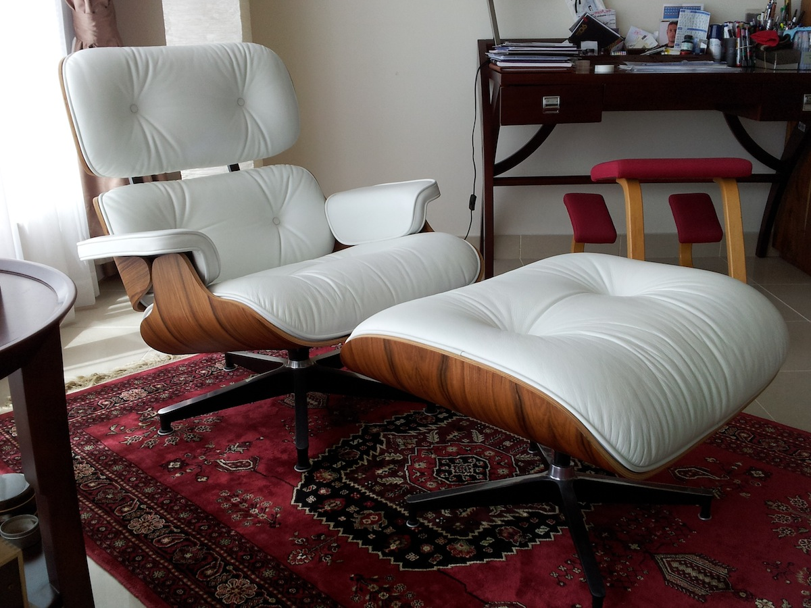
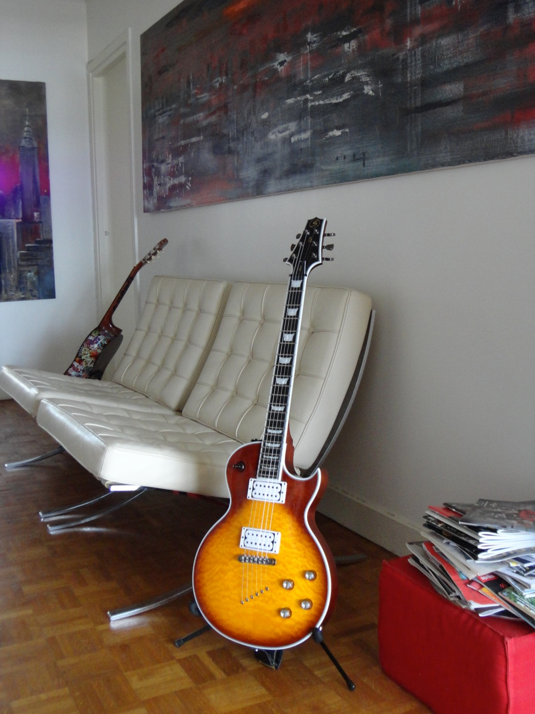

Normativity pops up most dramatically when we adjudicate originality and its contrast class, fakeness.
In the pictures on this page: my Eames Chair Eames Lounge Chair, Charles and Ray Eames, 1956 and my two Barcelona Chairs. Barcelona chair, Ludwig Mies van der Rohe and Lilly Reich, 1929


Image credit: GP.
- Two masterpieces of design, congratulations!
- Please hold on a minute before congratulating me, as you might not like what I am about to say. Facts is they are not “the original ones”. They are replicas, knockoffs, rip-offs, copies, call it as you want, you got the idea. The Eames is made by an English company which outsources in China a great part of their production, I believe. The Barcelonas are made in Italy.
Here there is some food for thought on the theme of what an original is in the first place; on how to properly promote and share the value of design; and lastly, we might even debate if we, as designers and consumers, are doing the right thing by granting trade-mark rights the way we do today.
Let’s start from getting the semantics right: we are talking about replicas, reproductions.
Some items are ‘licensed’, they are approved by the designer (or by their relatives or… not at all but someone bought a patent somehow...) and they carry some label of sort, guaranteeing that they are the closest you can get to the original objects. Fair enough; I actually think that in many cases, the vast majority of these industries have many good reasons to make those claims. But do you mind terribly if I do check? Do you mind terribly if I do not take all that I read on brochures at face value, and simply check, and then choose? Do you mind if I, as a designer, just go to the showroom, take measurements, sniff the leather, touch the veneer, the chromed parts and make my own mind about it? And do you mind if I, as a consumer, then decide if a price makes sense to me or not?
I really hope you don’t mind, my friend, because that’s what I did, and that’s what has brought me to the purchase of my furniture.
I do not have an ‘original’ Barcelona or ‘original’ Eames because I think originals do not exist and among the replicas available in the market, I chose what I considered the best.
My Barcelona chairs, in example, are in the exact size Mies Van der Rohe designed them. Not a millimetre more or a millimetre less. Believe it or not, the size - and materials as well - of many official furniture changed through the years at manufacturer’s discretion; additionally, my chairs do not carry any visible logo or signature on the leather and the legs: since it seemed that many people buy them as a fashion statement, at a certain point, the ‘originals’ were gratified with this quite tacky and intrusive feature. Would Mies have approved the addition of an intrusive signature carved into the steel legs of his chair? That’s for the Barcelona. Regarding the Eames, I bought it because, after comparison, I found it of better quality than the competition.
Not to mention the fact that there are two manufacturers – one in Europe and one in the United States – that got the right to claim to be the producer of the ‘original’ Eames. And never mind what Charles Eames designed, they now offer the chair in various sizes and styles.
Now, one can reasonably pinpoint that there is a premium to be paid to the designer, a premium that surely belongs to the inventors and to those who marketed the invention, to those who promoted design in the first place; by buying a replica we are denying the designers what’s truly theirs and we are mining the foundation of the whole design industry. It must be noted that companies like Knoll (the licensed manufacturer of the Barcelona Chair) do pay royalties on sales to the Museum of Modern Art in New York.
An interesting article on Dwell.com explains it concisely (emphasis is mine):
“Here’s how a designer makes money: One day she dreams up a chair. She spends months developing the concept, selecting materials, devising the exact curve of the arm, the dip of the back. Satisfied with the piece, she works with a manufacturer to produce it. The manufacturer refines the design, invests in tooling to build it, promotes it, and gets it to market. You, the consumer, buy it. This is an original, authentic design. Usually, a percentage of your purchase goes back to the designer, who reinvests it into her business, her next idea. In order to take risks and innovate—and, indeed, to make a living—a designer needs to profit from her successes. Same with manufacturers—they need money to contract and promote designers’ work and to keep their production quality high. This is the basic premise of how the design industry works, at least when all goes well.”
So this is the story, before the advents of rip-offs. Do I agree with this account?
Well, I am a designer so I am of course inclined to agree. But then I think I like the free market even more than design. I am just not really comfortable with claims that have to be accepted at face value, with the legacy of artists and designers being owned and dictated by corporations. I just have a sense that art and monopoly do not go together very well. Let’s talk about licensing policies for example, let’s talk about granting an inventor their well-earned profits, for sure! We managed to do that for decades for authors in all fields after all, with various success: drug manufacturers are obliged to give up their patents after a number of years for greater good; no matter how rich the inventor of that amazing drug could have been! If the drug is effective, its formula is relieved from all patents in a matter of years. If your band wants to play some Beatles, just make sure you pay your royalties and produce your cover record, then let the market decide. And if you want to dig from older authors, there are no royalties at all: if you want to stage a Shakespeare, your creativity will be the only limit. Nobody has any patent on the work of past authors. I personally think that the Adagio of Albinoni is worth listening to in the version of the Berliner Philarmoniker released in May, 1984, directed by Von Karajan and in that version only; but I am glad to live in world where nobody has imposed THAT outtake as the only ‘original’ Albinoni available on the market and forbid any other orchestra in the world to play it.
Just imagine it for a moment: - Oh, so you like, say, Mozart? Well, you can listen to his music as performed by this orchestra only, which has secured the rights to perform it back in the days; if you prefer Bach, you can rely on this other orchestra. And don’t you dare listening to Mozart or Bach played by any other performers or I will seriously question your musical tastes or call my lawyers!
We should treat the blueprint of a Barcelona chair the way we treat the script of Hamlet or the score of La Traviata. I guess my question is: would the world of design be better off if we implement different policies to protect and promote design? I sometimes imagine some authority on design actually pushing people to do replicas: do you want to produce a Wassily Chair? Sure: here the specs, here the standards, here the benchmark, and these are the royalties to be paid on sales; and then let the market decide! And may the best win and may good design reach as many people as possible.
There is one quite frequent objection to the above ideas: one might be tempted to think that this opens the door to the legitimization of the trade of counterfeit products, something that I do not condone at all. So let’s take a look at one market that is plagued by the phenomenon: Luxury watches.
Imagine you want a Rolex Submariner, the diver watch par excellence, one of the most copied wristwatch in the world. The technological and design features that made that watch a instant classic since the late 1950’s are available to every watch manufacturers and ‘submariner-like’ models – watches that owe their very own existence to the fact that Rolex designed the Submariner – are available in countless variants from tens of manufacturers. The original inventions that made the fortune of Rolex (the waterproof Oyster case, the self winding movement) are not exclusive or Rolex anymore. Of course only the Rolex Submariner is the Rolex Submariner. Period. But if your interest is in the design, in the mix of technological and aesthetics, then you can choose your favourite diver watch from many other manufacturers. I own a Certina Diver in titanium and a Seiko quartz diver. Both are almost identical to a submariner in terms of design but Rolex does not use titanium nor quartz movement for its diver watches. Yet both those watches would not exist without the Rolex Submariner and they both offer a premium to the buyer in terms of availability of alternative material or value for money. The key point is that design inventions are patented and then they expire; and that is an excellent thing. Rolex might have patented the first self-winding wrist watch but they do not own the exclusivity any more. This is crucial to let the market flourish and to keep the race to improve on. This is exactly what we should aim for in the design industry, in all of it. Furniture included. It might not be easy but again, examples from other fields are legion.
And, needless to say it, in such markets, quality wins in the end: Rolex does not sit on its laurels and its watches are still in demand and rightly so.
Regarding counterfeits, there is also a last aspect to consider, albeit briefly, and it is the counterfeit of logos and design not for reason tied to the quality of the products but because of the notoriety of the brand and the status associated to it. It is a somehow fragile trait of the human personality to try to get validation by ostentation and there is an entire industry built upon the creation of group identities, exploiting the need to belonging. This has more to do with social psychology than with design.